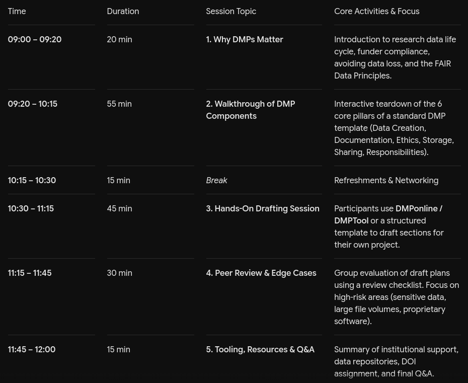
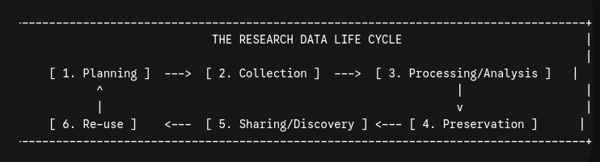
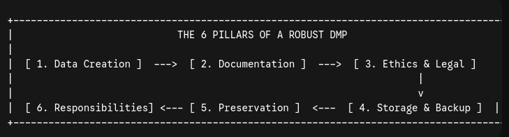
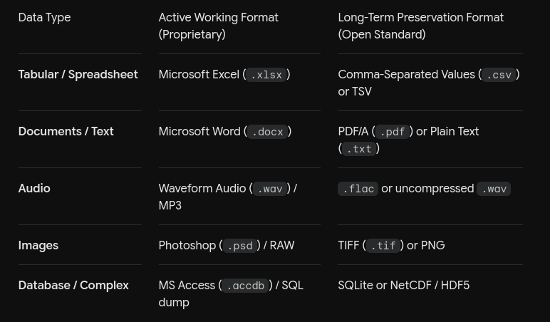
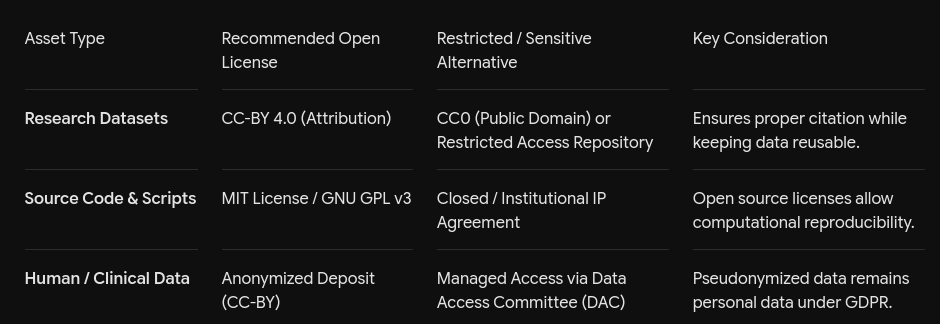
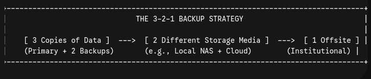
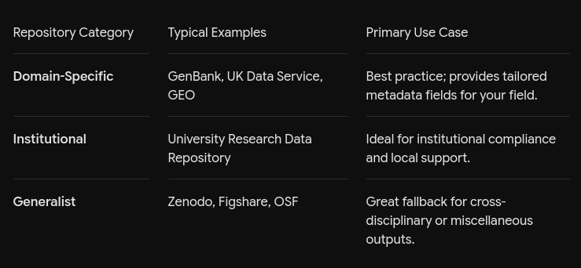
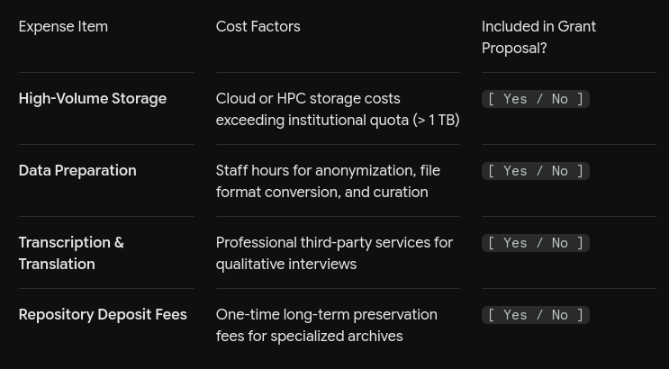
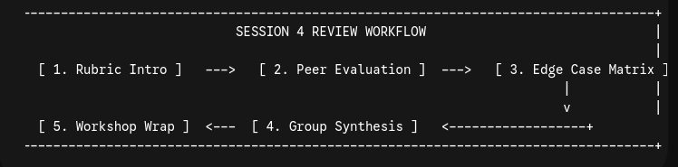
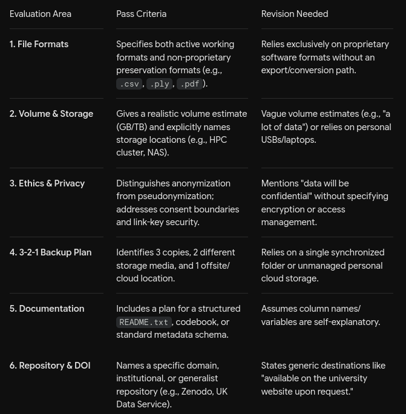

All in One View
Content from Data management plans
Last updated on 2026-10-07 | Edit this page
Workshop Overview
- Title: Designing Robust Data Management Plans (DMPs) for Research Success
- Target Audience: Early Career Researchers (ECRs), PhD students, and Principal Investigators (PIs) across STEM and HSS disciplines.
- Duration: 3 hours (Half-day interactive workshop)
- Format: Hybrid / In-person hands-on workshop (Includes short lectures, individual exercises, group peer review, and tool demonstrations)
- Key Tools Covered: DMPonline / DMPTool, institutional repositories, license selectors, and FAIR sharing registries.
Workshop Schedule

.Detailed Session Breakdown Session 1: Foundation & The FAIR Principles (20 mins)
- Data Lifecycles vs. Project Lifecycles: Moving beyond project end-dates to long-term stewardship.
- FAIR Principles Breakdown:
- Findable: Persistent Identifiers (DOIs, ORCIDs), rich metadata.
- Accessible: Standard communications protocols, open vs. restricted access routes.
- Interoperable: Standard formats, controlled vocabularies, ontologies.
- Reusable: Clear licensing (e.g., Creative Commons, MIT), provenance documentation.
Session 2: The Core Components of a DMP (55 mins)
- Data Collection & Types:
- Distinguishing between raw, processed, and final research outputs.
- File formats: Choosing non-proprietary formats for long-term sustainability (e.g., .csv over .xlsx, .flac or .wav over .mp3).
- Volume estimates and storage scaling.
- Documentation & Metadata:
- README file structures, codebook design, and data dictionaries.
- Discipline-specific metadata standards (e.g., Dublin Core, DDI, Schema.org).
- Ethics, Legal & Intellectual Property:
- Handling sensitive data: Consent forms for data sharing, anonymization vs. pseudonomization, GDPR/data protection alignment.
- Copyright, ownership (university vs. funder vs. researcher), and choosing open licenses.
- Storage, Backup & Security:
- The 3-2-1 Backup Strategy (3 copies, 2 different media, 1 offsite/cloud).
- Encryption protocols for sensitive data in transit and at rest.
- Selection, Preservation & Sharing:
- Deciding what data to keep vs. what to destroy.
- Choosing a repository (Generalist vs. Domain-Specific vs. Institutional).
- Responsibilities & Resources:
- Roles (who maintains the data during and after the project).
- Costing data management into grant applications (e.g., repository fees, transcription costs, curation effort).
Session 3: Practical Drafting Exercise (45 mins)
Activity Prompt: Participants log into DMPonline/DMPTool or open the provided Word template and complete three target sections: - Section A: Data Description & Formats. - Section B: Ethics, Access Rights, and Anonymization Plan. - Section C: Storage, Backup, and Long-Term Preservation Strategy.
Exercise Facilitator Tip: Circulate around the room to address specific technical edge cases (e.g., high-performance computing storage limits, commercial restrictions, biological or human subject data constraints).
Session 4: Peer Review Matrix & High-Risk Scenario Analysis (30 mins)
Group Case Study Options (10 mins discussion): - Scenario A: Managing several terabytes of imaging/sensor outputs on high-performance compute clusters. - Scenario B: Sharing anonymized interview transcripts with sensitive clinical context.
Overview
Questions
- “What ML/AI tools are you already aware of in healthcare, and what is your immediate gut reaction to them optimism, skepticism, or anxiety?”
- “Where do you think AI can make the biggest impact in your day-to-day workflow: reducing paperwork or assisting in patient diagnosis?”
Objectives
- Understand Funder Requirements: Identify core expectations from major funding bodies regarding research data stewardship.
- Apply the FAIR Principles: Operationalize Findability, Accessibility, Interoperability, and Reusability in daily workflows.
- Draft a Section-by-Section DMP: Create a practical, living DMP for their current or upcoming research projects.
- Budget & Risk Assess Data: Estimate costs associated with data storage, curation, anonymization, and long-term preservation.
- AI in healthcare isn’t a futuristic concept; it is already operating in triaging, billing, and radiology.
- The explosion of healthcare AI is driven by three factors: massive computing power, digitized health records (EHRs), and an explosion of genomic data.
- Effective healthcare AI requires collaboration data scientists understand the math, but clinicians understand the patient.
Content from Foundation & The FAIR Principles
Last updated on 2026-10-07 | Edit this page
Overview
Questions
- Findability: “Why is saving data on a lab server or personal Google Drive not enough to make it truly ‘Findable’ by the wider research community?”
- Accessibility: “Does making data FAIR mean it must be completely public and open to everyone? How do we handle sensitive clinical, commercial, or ecological data?”
- Interoperability: “What proprietary file formats do you rely on daily, and what open standards could you export to for long-term preservation?”
- Reusability: “If someone downloaded your raw dataset today without talking to you, what documentation would they need to replicate your analysis?”
Objectives
- Articulate the Value of Active Data Stewardship: Explain how structured Data Management Plans mitigate research risks (data loss, non-reproducibility) and save time throughout the research lifecycle.
- Differentiate Project vs. Data Lifecycles: Recognize that while research grants have finite end dates, research datasets require long-term preservation and curation strategies.
- Deconstruct the FAIR Principles: Identify the core components of Findability, Accessibility, Interoperability, and Reusability within practical academic workflows.
- Identify Workflow Gaps: Evaluate their own research data practices against the FAIR principles to pinpoint areas needing immediate improvement.
Module 1.1: The “Data Disaster” Hook
The Reality Check
A Data Management Plan is not administrative paperwork—it is your insurance policy against lost time, corrupted files, and uninterpretable results.
Consider a common academic scenario:
- A researcher finishes a project or completes their degree and moves to another institution.
- Two years later, a journal editor or peer reviewer asks for raw data during a replication check or meta-analysis.
- The remaining research team finds an unindexed cloud folder containing unlabeled columns, proprietary file formats, and no codebook.
The result: The data is effectively dead, and months of labor are rendered unverified. Retrofitting documentation at the end of a project takes 3–5x more effort than logging metadata continuously.
Module 1.2: Research Data Life Cycle vs. Project Life Cycle
Funding cycles usually last 1–3 years, but research data can have a lifespan of decades if properly curated.

.- Projects end; data persists. Major funding bodies (e.g., UKRI, NIH, Horizon Europe, Wellcome) treat research outputs as public goods.
- A living DMP bridges the gap between active research work and long-term data preservation.
Module 1.3: Operationalizing the FAIR Data Principles
The FAIR Data Principles provide the framework for sustainable data stewardship.
- Findable
- Requirement: Humans and automated tools can discover the dataset.
- Implementation:
- Assign a Persistent Identifier (PID) such as a Digital Object Identifier (DOI) via repositories (e.g., Zenodo, Figshare, institutional repositories).
- Link your personal ORCID iD to the dataset metadata.
- Tag datasets with standardized discipline keywords.
- Accessible
- Requirement: Clear conditions and protocols for retrieving the data.
- Implementation:
- Use open, standard communication protocols (e.g., HTTP, FTP).
- Remember: “As open as possible, as closed as necessary.”
- Sensitive human subject data, protected species locations, or proprietary IP can remain FAIR by providing public metadata while placing raw files behind controlled access protocols (e.g., Data Access Committees).
- Interoperable
- Requirement: Data can integrate with other datasets, workflows, and applications.
- Implementation:
- Store data in non-proprietary formats (e.g., .csv alongside .xlsx, .flac alongside .mp3).
- Utilize standard domain ontologies, controlled vocabularies, and ISO standards (e.g., ISO 8601 for dates: YYYY-MM-DD).
- Reusable
- Requirement: Data contains rich context so others can build upon it safely.
- Implementation:
- Apply an explicit machine-readable usage license (e.g., CC-BY 4.0 for data, MIT/GPL for software).
- Attach comprehensive provenance documentation: experimental parameters, device calibration details, preprocessing scripts, and software version numbers.
Module 1.4: Interactive Self-Assessment
Quick Reflection Task
Think about a dataset you produced or analyzed over the past 12 months. Which element of FAIR represents the biggest gap in your current workflow?
[ ] Findable: My data lives on local drives or unindexed personal cloud storage. [ ] Accessible: There is no documented pathway for external researchers to request access. [ ] Interoperable: My files rely on specialized, proprietary software formats. [ ] Reusable: I haven’t attached a clear license or detailed README file.
Common Bottlenecks & Solutions
- Challenge: “We rely on vendor-specific binary formats from lab
equipment.”
- Fix: Retain raw binary files for active analysis, but export a open-standard copy (e.g., .csv, .tiff, .HDF5) for the archived deposit.
- Challenge: “I don’t know which open license applies to my
discipline.”
- Fix: We cover license selector tools and institutional guidance in Session 2.
- DMPs are Living Tools, Not Paperwork: A Data Management Plan is a dynamic roadmap that evolves with your project, serving as an insurance policy against data corruption and misinterpretation.
- Proactive Curation Saves Time: Documenting metadata, variable names, and folder structures during data collection takes a fraction of the effort required to reconstruct them at the end of a project.
- As Open as Possible, As Closed as Necessary: Accessibility under FAIR does not violate ethical or GDPR boundaries. Restricted access protocols can protect participant privacy while keeping dataset metadata fully discoverable.
- Persistent Identifiers Matter: Using DOIs for datasets and linking them to your ORCID iD ensures proper citation, academic credit, and long-term traceability.
- Prioritize Non-Proprietary Formats: Storing data in open formats (e.g., .csv, .tiff, .flac) ensures your files remain readable decades after proprietary software licenses expire.
Content from Walkthrough of DMP Components
Last updated on 2026-10-07 | Edit this page
Overview
Questions
- Formats & Workflows: “What software tools in your lab create locked or proprietary binary formats? Is there an automated pipeline or export script you could use to save open-standard copies?”
- Ethical Sharing: “If your study involves sensitive human participant data, how can you write your Participant Information Sheets (PIS) so that consent explicitly allows sharing anonymized data long-term?”
- Costing & Budgeting: “Have you ever included data management hardware, cloud storage, or curation effort line-items in a grant budget? Why or why not?”
Objectives
- Identify the 6 Core Pillars of standard funding agency DMP templates.
- Select Preservation Formats: Distinguish between proprietary working formats and open-standard preservation formats.
- Design Metadata & Documentation Assets: Structure a standardized README.txt file and data dictionary.
- Formulate Ethical & Security Protocols: Establish appropriate anonymization, encryption, and access control measures for sensitive data.
- Implement the 3-2-1 Backup Strategy: Build a resilient storage and backup pipeline.
- Assign Data Stewardship Roles: Define explicit data management responsibilities and budget for curation costs in grant proposals.
Module 2.1: The 6 Pillars of a Data Management Plan
Standard DMP templates from major funding bodies (e.g., UKRI, NIH, Horizon Europe) are structured around six fundamental areas:

.Module 2.2: Pillar Breakdown & Best Practices ## Pillar 1: Data Creation, Types & Formats
- What to Address:
- What types of data will be collected or generated (e.g., observational, experimental, simulation, qualitative)?
- Estimated total data volume over the project lifecycle (e.g., Gigabytes vs. Terabytes).
- Working file formats vs. Long-term archiving formats.
- Format Standards Table:

.Pillar 2: Documentation, Metadata & Reproducibility
- What to Address:
- How will someone else (or you in 5 years) know what your variables, column headers, and codes mean?
- Core Documentation Assets:
- README.txt File: Root-level text document outlining directory structure, software dependencies, citation info, and usage parameters.
- Data Dictionary / Codebook: Explaining variable names, units of measurement, missing value codes (e.g., -999 vs NA), and data types.
- Formal Metadata Standards: Discipline-specific schema (e.g., Dublin Core, DDI for social sciences, Darwin Core for biodiversity, Schema.org).
Pillar 3: Ethics, Legal Compliance & Intellectual Property
- What to Address:
- Participant consent, GDPR/data protection regulations, confidential or commercially sensitive information.
- Copyright ownership (University vs. Funder vs. Researcher) and licensing choice.
- Key Protocols:
- Anonymization vs. Pseudonymization: Pseudonymized data (keys held separately) remains personal data under GDPR; fully anonymized data does not.
- Licensing Selections:
- CC-BY 4.0: Open access with attribution (recommended for datasets).
- CC0 (Public Domain): Maximum reusability without restrictions.
- MIT / GPL v3: Preferred licenses for code and computational scripts.

.Pillar 4: Storage, Backup & Security
- What to Address:
- Where active data resides during the project and how access permissions are managed.
- Backup schedules, redunancy, and physical/digital security.
- The 3-2-1 Backup Strategy:

.Security Warning: Avoid syncing unencrypted sensitive participant data to commercial cloud services (e.g., personal Dropbox or Google Drive). Use institutionally managed, encrypted storage solution.
Pillar 5: Selection, Preservation & Sharing
- What to Address:
- What data must be kept long-term vs. what can be safely discarded (e.g., raw sensor logs vs. processed features)?
- Which repository will host the dataset after project completion?
- How long will the data be retained (funder standard is typically 10+ years)?
- Repository Types:
- Domain-Specific Repositories (Best practice: e.g., GenBank, UK Data Service, GEO).
- Institutional Repositories (University-backed repository assigning DOIs).
- Generalist Repositories (e.g., Zenodo, Figshare, OSF).

.Pillar 6: Responsibilities & Resourcing
- What to Address:
- Who is explicitly responsible for each data management task throughout the project lifecycle?
- What are the financial costs associated with data preparation, curation, and long-term storage?
- Resource Costing Checklist:

.- Standardize Formats Early: Always preserve an open-standard copy (.csv, .pdf, .flac, .tif) alongside your proprietary working files to ensure long-term readability.
- Document for a Stranger: Assume the person re-using your dataset has never spoken to you. Provide self-contained README files and data dictionaries.
- Protect Sensitive Data at the Consent Stage: Ethical data sharing begins with how informed consent forms are written. Include explicit wording permitting secondary research on anonymized outputs.
- Enforce 3-2-1 Backups: Never rely on a single laptop, USB drive, or unmanaged personal cloud folder for active research data.
- Assign Named Roles: Clearly assign named individuals (e.g., lead post-doc, lab manager, PI) to specific data tasks so accountability doesn’t fall through the cracks.
Last updated on 2026-10-07 | Edit this page
| title: Practical Drafting Session |
| teaching: 45 |
| exercises: 15 |
Overview
Questions
- Format Conversion Overhead: “How much automated scripting (e.g., Python, R, Bash) can you write into your analysis pipeline to automatically convert working files to open standards upon completion?”
- Cloud vs. On-Premises Backups: “Does your current backup setup fulfill all three components of the 3-2-1 strategy, or are you relying entirely on a single synchronized cloud folder?”
- Documentation Debt: “How long would it take to draft a complete README.txt for your current active project if you started right now?”
Objectives
- Draft Core DMP Sections: Write concrete, funder-compliant responses for Data Collection, Ethics/Storage, and Long-Term Sharing.
- Formulate Format Conversion Rules: Identify proprietary file formats used in their current pipeline and define clear export pathways to open standards.
- Construct a Standardised README.txt: Build a project root folder documentation asset following metadata standards.
Hands-On Drafting Exercises
Participants will open their preferred tool (DMPonline, DMPTool, or a local Word/Markdown template) and complete three focused drafting blocks.
Exercise 1: Data Types, Formats & Volume (15 mins)
Prompt: Define the operational outputs of your current or upcoming project using the structured breakdown below.
.
Exercise 2: Ethics, Security & Backup (15 mins)
Prompt: Document your data protection measures, consent boundaries, and backup pipeline using the 3-2-1 strategy framework.
.
Exercise 3: Documentation Asset – Root README.txt (15 mins)
Prompt: Create a standardized, bare-bones README.txt template to accompany your dataset upon repository deposit.
======================================================================== DATASET README FILE ========================================================================
- GENERAL INFORMATION
- Title of Dataset: [ Insert Project Title ]
- Principal Investigator / Author: [ Name, ORCID iD, Email ]
- Date of Data Collection: [ YYYY-MM-DD to YYYY-MM-DD ]
- Geographic Location / Context: [ Institution / Field Location ]
- Funding Source / Grant Number: [ Funder Name, Grant ID ]
- FILE & DIRECTORY STRUCTURE
- /raw_data/ : Unprocessed files direct from acquisition equipment.
- /processed_data/ : Anonymized, cleaned, and feature-engineered outputs (.csv).
- /scripts/ : Code pipelines for processing and statistical evaluation.
- /docs/ : Data dictionary, codebook, and metadata definitions.
- DATA DICTIONARY & VARIABLES
- Column A: sample_id [ Unique participant identifier; string ]
- Column B: scan_date [ Date of scan acquisition; ISO 8601 YYYY-MM-DD ]
- Column C: volume_mm3 [ Calculated lesion volume; numeric, float ]
- Missing Values Code : NA or -9999
- LICENSING & ACCESS
- Usage License : Creative Commons Attribution 4.0 International (CC-BY 4.0)
Persistent Identifier: DOI: 10.xxxx/zenodo.xxxxxxx
- Draft as You Work: Never wait until the final month of a grant to write your DMP documentation assets.
- Automate Format Exports: Integrate export rules (.csv, .pdf, .tif) directly into your computing pipelines.
- Lock Down Identifiers: Pseudonymize early and verify that linkage keys are stored separately from raw analytical files.
- Standardize Metadata From Day 1: Using ISO standards (e.g., ISO 8601 for dates: YYYY-MM-DD) and clear missing value indicators (NA) prevents downstream analysis bugs.
Last updated on 2026-10-07 | Edit this page
| title: Peer Review & Edge Cases |
| teaching: 45 |
| exercises: 15 |
Overview
Questions
- Data Retention Limits: “If forced to cut your dataset volume by 50% for long-term archiving due to storage caps, what intermediate files would you discard first?”
- Reviewing Peer Plans: “What was the most common gap or ambiguity you noticed when evaluating your partner’s draft plan?”
- Living Document Maintenance: “Who on your research team will be tasked with updating the DMP when project parameters, software versions, or personnel change?”
Objectives
- Apply a Review Rubric: Evaluate a peer’s draft DMP for completeness, feasibility, and funder compliance.
- Resolve High-Risk Scenarios: Formulate strategies for complex data edge cases, including high-throughput imaging, restricted clinical data, and proprietary software dependencies.
- Establish Data Retention Thresholds: Determine what intermediate data can be safely discarded versus what raw/processed data must be preserved long-term.
- Finalize an Actionable DMP: Refine their project DMP into a submission-ready, living document.
Workflow & Progression

.Peer Evaluation & Review Rubric
Participants pair up to review a colleague’s draft sections (from Session 3) using this 6-point rubric.

.Edge Case Analysis & Solutions
Case 1: High-Volume Computational Data (e.g., HPC / Large Scale Simulations)
- The Challenge: Generating tens of terabytes of intermediate raw outputs, model checkpoints, or raw sensor feeds where long-term cloud storage costs are prohibitive.
- The Solution:
- Document a clear selection and destruction policy: preserve the raw input configurations, processing code/scripts, random seeds, and final summarized outputs.
- Intermediate cache or scratch files that can be deterministically re-computed from source code should be flagged for deletion post-project.
Case 2: Restricted Clinical or Sensitive Human Data
- The Challenge: Datasets containing human subject imaging, genomic sequences, or sensitive health records that cannot be shared publicly under GDPR or institutional ethics rules.
- The Solution:
- Adopt the “As open as possible, as closed as necessary” framework.
- Publish the dataset metadata (title, methodology, abstract, keywords) openly on a repository to assign a DOI.
- Deposit raw files into a Managed Access Repository controlled by a Data Access Committee (DAC), requiring data transfer agreements for secondary access.
Case 3: Proprietary Equipment & Custom Code
- The Challenge: Data generated by specialized lab hardware locked into vendor-specific binary formats (.raw, .mat, proprietary acquisition software).
- The Solution:
- Archive the native binary files to preserve original signal fidelity.
- Programmatically generate and archive an open-standard derivative (e.g., .csv, .tiff, .HDF5) alongside lightweight open-source parsing scripts (Python/R) so future researchers can read the data without vendor licenses.
- Constructive Peer Review: Reviewing another researcher’s DMP often exposes gaps in your own backup and documentation assumptions.
- Metadata Can Be Open Even If Data Is Closed: Sensitive human or commercial data can remain FAIR by making its metadata discoverable while keeping raw files under controlled access.
- Distinguish Recomputable vs. Irreplaceable Data: Save raw inputs, seeds, and analytical code; destroy easily recomputable intermediate scratch files if storage space is constrained.
- A DMP is a Living Document: Revisit and update your plan at major project milestones, personnel transitions, or before submitting paper manuscripts.